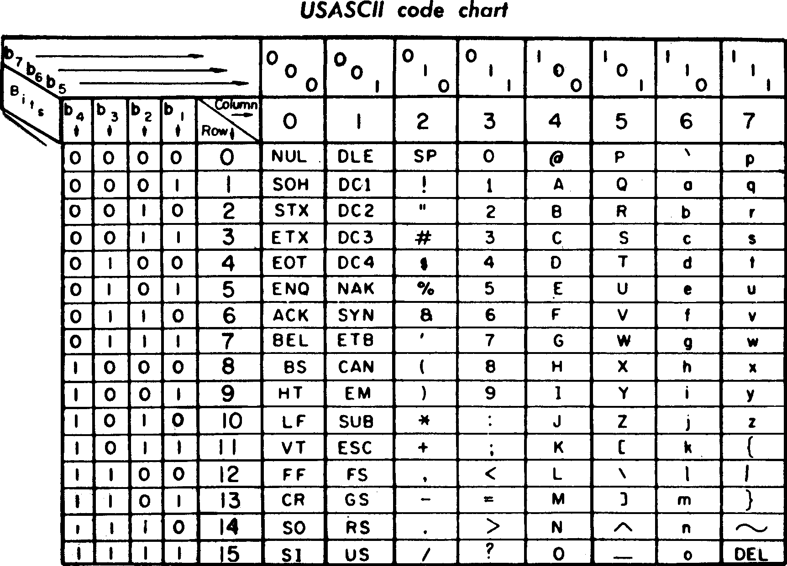

ASCII（维基百科）
ASCII
维基百科，自由的百科全书
ASCII（发音： /ˈæski/ ASS-kee[1]，American Standard Code for Information Interchange，美国信息交换标准代码）是基于拉丁字母的一套电脑编码系统。它主要用于显示现代英语，而其扩展版本EASCII则可以部分支持其他西欧语言，并等同于国际标准ISO/IEC 646。
ASCII 是这套编码系统的传统命名，IANA 现在更倾向于使用它的新名字 US-ASCII [2]。
ASCII是 IEEE里程碑 之一。
目录
1.概览
2.控制字符
3.可显示字符
4.缺点
5.参见 1968年版ASCII编码速见表
6.参考资料
{kind=link}
概览
ASCII 由电报码发展而来。第一版标准发布于1963年[3][4]，1967年经历了一次主要修订[5][6]，最后一次更新则是在1986年，至今为止共定义了128个字符；其中33个字符无法显示（一些终端提供了扩展，使得这些字符可显示为诸如笑脸、扑克牌花式等8-bit符号），且这33个字符多数都已是陈废的控制字符。控制字符的用途主要是用来操控已经处理过的文字。在33个字符之外的是95个可显示的字符。用键盘敲下空白键所产生的空白字符也算1个可显示字符（显示为空白）。
控制字符
1. Unicode表示法：当我们想在画面或纸张上表示这些控制字符时，就会显示成这个样子。过于老旧的系统或浏览器可能会看不到。使用微软任一中文输入法，输入`U2400即可看到␀，输入`U2401可看到␁，依此类推。
2. 脱出字符表示法：通常用于终端连线（例如Telnet通信协议），以脱出字符^开头，再接一个符号，用来让这些控制字符得以在画面上显现。虽然看起来是两个字符，但在终端上实际只有一个字符。在绝大部分的终端系统中，包括Windows的命令提示字符（cmd.exe）、Linux和FreeBSD，都可用Ctrl代表脱出字符，输入想要的ASCII控制字符。例如想输入空字符，就要输入Ctrl+2，而非^@，后者会显示成两字符，前者只会显示成一字符。
| 二进制 | 十进制 | 十六进制 | 缩写 | Unicode 表示法 |
脱出字符 表示法 |
名称／意义 |
|---|---|---|---|---|---|---|
| 0000 0000 | 0 | 00 | NUL | ␀ | ^@ | 空字符（Null） |
| 0000 0001 | 1 | 01 | SOH | ␁ | ^A | 标题开始 |
| 0000 0010 | 2 | 02 | STX | ␂ | ^B | 本文开始 |
| 0000 0011 | 3 | 03 | ETX | ␃ | ^C | 本文结束 |
| 0000 0100 | 4 | 04 | EOT | ␄ | ^D | 传输结束 |
| 0000 0101 | 5 | 05 | ENQ | ␅ | ^E | 请求 |
| 0000 0110 | 6 | 06 | ACK | ␆ | ^F | 确认回应 |
| 0000 0111 | 7 | 07 | BEL | ␇ | ^G | 响铃 |
| 0000 1000 | 8 | 08 | BS | ␈ | ^H | 退格 |
| 0000 1001 | 9 | 09 | HT | ␉ | ^I | 水平定位符号 |
| 0000 1010 | 10 | 0A | LF | ␊ | ^J | 换行键 |
| 0000 1011 | 11 | 0B | VT | ␋ | ^K | 垂直定位符号 |
| 0000 1100 | 12 | 0C | FF | ␌ | ^L | 换页键 |
| 0000 1101 | 13 | 0D | CR | ␍ | ^M | CR (字符) |
| 0000 1110 | 14 | 0E | SO | ␎ | ^N | 取消变换（Shift out） |
| 0000 1111 | 15 | 0F | SI | ␏ | ^O | 启用变换（Shift in） |
| 0001 0000 | 16 | 10 | DLE | ␐ | ^P | 跳出数据通讯 |
| 0001 0001 | 17 | 11 | DC1 | ␑ | ^Q | 设备控制一（XON 激活软件速度控制） |
| 0001 0010 | 18 | 12 | DC2 | ␒ | ^R | 设备控制二 |
| 0001 0011 | 19 | 13 | DC3 | ␓ | ^S | 设备控制三（XOFF 停用软件速度控制） |
| 0001 0100 | 20 | 14 | DC4 | ␔ | ^T | 设备控制四 |
| 0001 0101 | 21 | 15 | NAK | ␕ | ^U | 确认失败回应 |
| 0001 0110 | 22 | 16 | SYN | ␖ | ^V | 同步用暂停 |
| 0001 0111 | 23 | 17 | ETB | ␗ | ^W | 区块传输结束 |
| 0001 1000 | 24 | 18 | CAN | ␘ | ^X | 取消 |
| 0001 1001 | 25 | 19 | EM | ␙ | ^Y | 连线介质中断 |
| 0001 1010 | 26 | 1A | SUB | ␚ | ^Z | 替换 |
| 0001 1011 | 27 | 1B | ESC | ␛ | ^[ | 退出键 |
| 0001 1100 | 28 | 1C | FS | ␜ | ^\ | 文件分割符 |
| 0001 1101 | 29 | 1D | GS | ␝ | ^] | 组群分隔符 |
| 0001 1110 | 30 | 1E | RS | ␞ | ^^ | 记录分隔符 |
| 0001 1111 | 31 | 1F | US | ␟ | ^_ | 单元分隔符 |
| 0111 1111 | 127 | 7F | DEL | ␡ | ^? | 删除 |
可显示字符
| 二进制 | 十进制 | 十六进制 | 图形 |
|---|---|---|---|
| 0010 0000 | 32 | 20 | (space) |
| 0010 0001 | 33 | 21 | ! |
| 0010 0010 | 34 | 22 | " |
| 0010 0011 | 35 | 23 | # |
| 0010 0100 | 36 | 24 | $ |
| 0010 0101 | 37 | 25 | % |
| 0010 0110 | 38 | 26 | & |
| 0010 0111 | 39 | 27 | ' |
| 0010 1000 | 40 | 28 | ( |
| 0010 1001 | 41 | 29 | ) |
| 0010 1010 | 42 | 2A | * |
| 0010 1011 | 43 | 2B | + |
| 0010 1100 | 44 | 2C | , |
| 0010 1101 | 45 | 2D | - |
| 0010 1110 | 46 | 2E | . |
| 0010 1111 | 47 | 2F | / |
| 0011 0000 | 48 | 30 | 0 |
| 0011 0001 | 49 | 31 | 1 |
| 0011 0010 | 50 | 32 | 2 |
| 0011 0011 | 51 | 33 | 3 |
| 0011 0100 | 52 | 34 | 4 |
| 0011 0101 | 53 | 35 | 5 |
| 0011 0110 | 54 | 36 | 6 |
| 0011 0111 | 55 | 37 | 7 |
| 0011 1000 | 56 | 38 | 8 |
| 0011 1001 | 57 | 39 | 9 |
| 0011 1010 | 58 | 3A | : |
| 0011 1011 | 59 | 3B | ; |
| 0011 1100 | 60 | 3C | < |
| 0011 1101 | 61 | 3D | = |
| 0011 1110 | 62 | 3E | > |
| 0011 1111 | 63 | 3F | ? |
| 二进制 | 十进制 | 十六进制 | 图形 |
|---|---|---|---|
| 0100 0000 | 64 | 40 | @ |
| 0100 0001 | 65 | 41 | A |
| 0100 0010 | 66 | 42 | B |
| 0100 0011 | 67 | 43 | C |
| 0100 0100 | 68 | 44 | D |
| 0100 0101 | 69 | 45 | E |
| 0100 0110 | 70 | 46 | F |
| 0100 0111 | 71 | 47 | G |
| 0100 1000 | 72 | 48 | H |
| 0100 1001 | 73 | 49 | I |
| 0100 1010 | 74 | 4A | J |
| 0100 1011 | 75 | 4B | K |
| 0100 1100 | 76 | 4C | L |
| 0100 1101 | 77 | 4D | M |
| 0100 1110 | 78 | 4E | N |
| 0100 1111 | 79 | 4F | O |
| 0101 0000 | 80 | 50 | P |
| 0101 0001 | 81 | 51 | Q |
| 0101 0010 | 82 | 52 | R |
| 0101 0011 | 83 | 53 | S |
| 0101 0100 | 84 | 54 | T |
| 0101 0101 | 85 | 55 | U |
| 0101 0110 | 86 | 56 | V |
| 0101 0111 | 87 | 57 | W |
| 0101 1000 | 88 | 58 | X |
| 0101 1001 | 89 | 59 | Y |
| 0101 1010 | 90 | 5A | Z |
| 0101 1011 | 91 | 5B | [ |
| 0101 1100 | 92 | 5C | \ |
| 0101 1101 | 93 | 5D | ] |
| 0101 1110 | 94 | 5E | ^ |
| 0101 1111 | 95 | 5F | _ |
| 二进制 | 十'' | 十六'' | 图形 |
|---|---|---|---|
| 0110 0000 | 96 | 60 | ` |
| 0110 0001 | 97 | 61 | a |
| 0110 0010 | 98 | 62 | b |
| 0110 0011 | 99 | 63 | c |
| 0110 0100 | 100 | 64 | d |
| 0110 0101 | 101 | 65 | e |
| 0110 0110 | 102 | 66 | f |
| 0110 0111 | 103 | 67 | g |
| 0110 1000 | 104 | 68 | h |
| 0110 1001 | 105 | 69 | i |
| 0110 1010 | 106 | 6A | j |
| 0110 1011 | 107 | 6B | k |
| 0110 1100 | 108 | 6C | l |
| 0110 1101 | 109 | 6D | m |
| 0110 1110 | 110 | 6E | n |
| 0110 1111 | 111 | 6F | o |
| 0111 0000 | 112 | 70 | p |
| 0111 0001 | 113 | 71 | q |
| 0111 0010 | 114 | 72 | r |
| 0111 0011 | 115 | 73 | s |
| 0111 0100 | 116 | 74 | t |
| 0111 0101 | 117 | 75 | u |
| 0111 0110 | 118 | 76 | v |
| 0111 0111 | 119 | 77 | w |
| 0111 1000 | 120 | 78 | x |
| 0111 1001 | 121 | 79 | y |
| 0111 1010 | 122 | 7A | z |
| 0111 1011 | 123 | 7B | { |
| 0111 1100 | 124 | 7C | | |
| 0111 1101 | 125 | 7D | } |
| 0111 1110 | 126 | 7E | ~ |
缺点
ASCII的局限在于只能显示26个基本拉丁字母、阿拉伯数字和英式标点符号，因此只能用于显示现代美国英语（且处理naïve、café、élite等外来语时，必须去除附加符号）。虽然EASCII解决了部分西欧语言的显示问题，但对更多其他语言依然无能为力。因此，现在的软件系统大多采用Unicode。
参见
- EASCII（Extended ASCII）
- EBCDIC
- ISO/IEC 646
- ISO/IEC 8859
- 控制字符
- ASCII艺术
- ASCII丝带行动
参考资料
- ASCII的口语发音. Merriam Webster. Accessed 2008-04-14.
- ^ Internet Assigned Numbers Authority (IANA) (May 14, 2007). "Character Sets". Accessed 2008-04-14.
- ^ Brandel, Mary. 1963: The Debut of ASCII. CNN. July 6, 1999 [2008-04-14].
- ^ American Standard Code for Information Interchange, ASA X3.4-1963. American Standards Association (ASA). 1963-06-17 [2018-09-28]. （原始内容存档于September 28, 2018）.
- ^ USA Standard Code for Information Interchange, USAS X3.4-1967. United States of America Standards Institute (USASI). July 7, 1967.
- ^ Jennings, Thomas Daniel. An annotated history of some character codes or ASCII: American Standard Code for Information Infiltration. World Power Systems (WPS). 2016-04-20 [1999][2018-09-28]. （原始内容存档于September 28, 2018）.
以上资料均来源于维基百科，本站只做搬运，仅供参考。
编辑于2019-12-08晚
搜狗百科：https://baike.sogou.com/v53369.htm?fromTitle=ASCII
百度百科：https://baike.baidu.com/item/ASCII/309296?fr=aladdin
维基百科：https://zh.wikipedia.org/wiki/ASCII